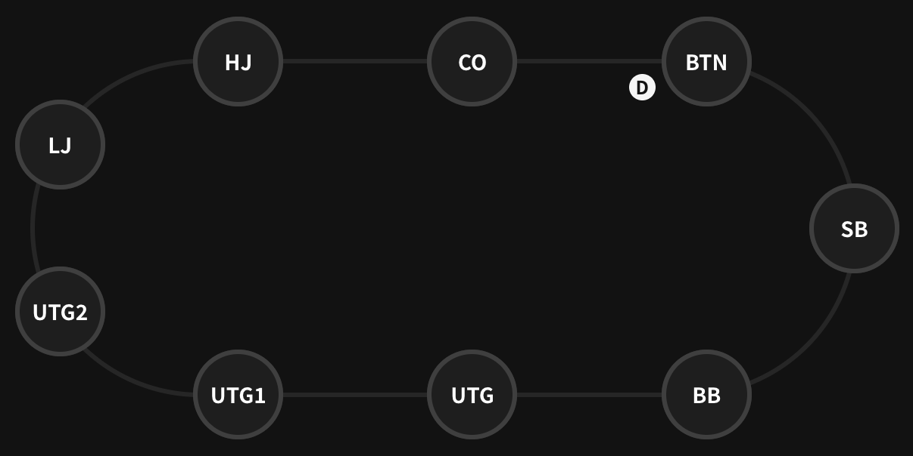

Open raise レンジの練習
Preflop のレンジを覚えて、周りの人間をクラッシュしよう！
Open raise レンジの原則
Preflop で他のプレイヤーが raise していない状態で最初に raise することを、open raise もしくは単に open する と呼びます。
Open raise レンジは、自分の後ろに座っているプレイヤーの人数によって決まります。 自分の後ろに多くのプレイヤーがいるほど、参加するハンドは絞る必要があります。
ポジションの名前の一覧
9人卓の場合、preflop でアクションをする順に、UTG, UTG+1, UTG+2, LJ, HJ, CO, BTN, SB, BB と呼ばれます。
- UTG: Under the Gun (アンダーザガン)
- UTG+1: Under the Gun+1 (プラス1)
- UTG+2: Under the Gun+2 (プラス2)
- LJ: Low Jack (ロージャック)
- HJ: High Jack (ハイジャック)
- CO: Cut Off (カットオフ)
- BTN: Button (ボタン)
- SB: Small Blind (スモールブラインド)
- BB: Big Blind (ビッグブラインド)
この Trainer は、GTO Wizard Cash, 9max, 100bb, General, NL50, open: 2.5x, 3b: GTO のソリューションをもとに作成されています。
現在 問連続正解中！(累計正解数：/問中)
このハンドは open raise できますか？
あなたのポジション： （人のプレイヤーが後ろにいます）